모두 실제 앱(mock, 관리자) 1440×900 캡처입니다. 주소에 ?variant=A|B|C를 붙인 버리는 시안이고, 고르신 안만 구현합니다. 시안 코드는 이 브랜치(prototype/1189-home-switcher)에 있고, 조사는 research.md, 상세 설명은 captions.md에 있습니다.
#1189 홈 화면과 왼쪽 위 시스템 전환
상태: 소유자 결정 보류(2026-11-01), 지금 화면 유지. 고를 것: A · B · C 중 하나(섞어도 됩니다). 추천은 A입니다. 지금 패턴을 유지하면서 가장 조용하고, 계약 변경이 작습니다(전환기 2열 카드 → 1열 목록).
조사에서 진단한 "안 예쁜" 이유: 전환기 아이콘이 바로 아래 메뉴 아이콘과 같아 두 번 보임 · 레일에서 전환기만 파랗게 채운 칩이라 배지처럼 보임 · 팝오버 안에 카드가 또 있고 현재 표시가 세 겹 · 홈 카드에 같은 회색 작은 줄이 세 개씩 쌓여 위계가 평평함 · 카드가 페이지를 가득 채움.
지금 지금 화면
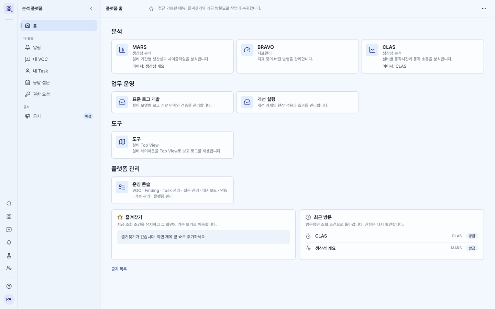
홈
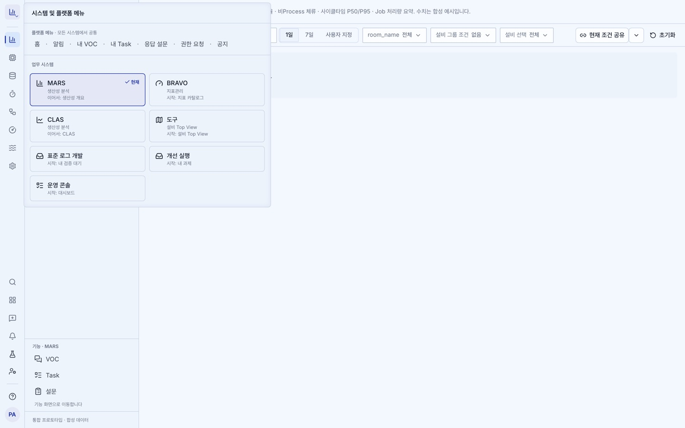
전환기를 연 모습(MARS 생산성 개요에서)
추천 A 조용한 목록
홈: 카드·칩·테두리 없이 한 줄 행(아이콘 · 이름 · 짧은 문구), 이어 갈 곳이 있으면 오른쪽에 이어서 · 생산성 개요.
아래 즐겨찾기·최근 방문·공지도 같은 열에 테두리 없이 맞춤.
전환기: 32px 중립 버튼 안 M ⇅(한글 이름 시스템은 그 시스템 아이콘), 팝오버는 1열 목록·현재는 ✓ 하나·플랫폼 메뉴는 아래로.
구현 약 10파일(전환기·홈·레일 + 문구 + 시스템 아이콘 필드 + 테스트·문서). 표준 로그 개발·개선 실행은 지금 아이콘이 같아 시스템별 아이콘 필드가 필요합니다.
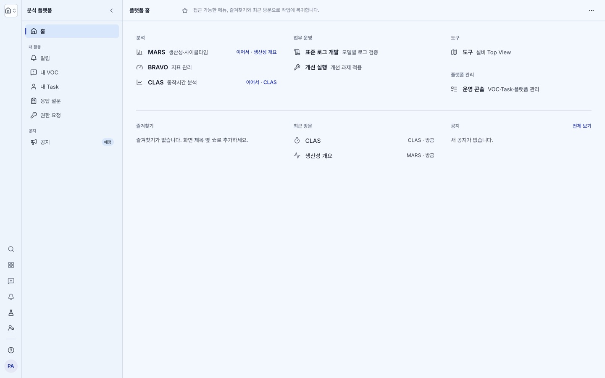
홈
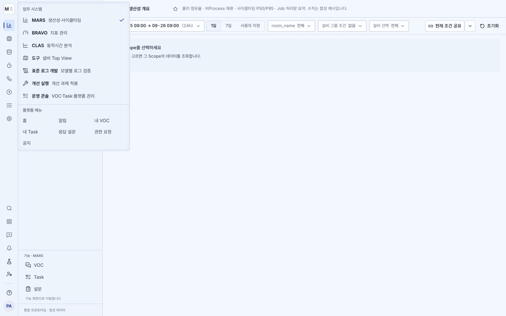
전환기
B 런처 격자
홈·전환기 모두 아이콘 상자 + 이름만(설명 없음). 이어서는 타일 툴팁으로만.
전환기 트리거가 와플 아이콘이라 지금 어느 시스템인지 트리거에 안 보입니다(계약 §3.2와 다름).
구현 약 6–7파일 + ADR.
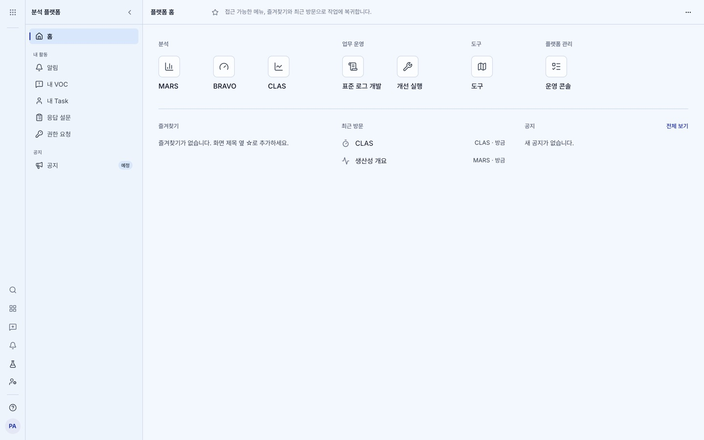
홈
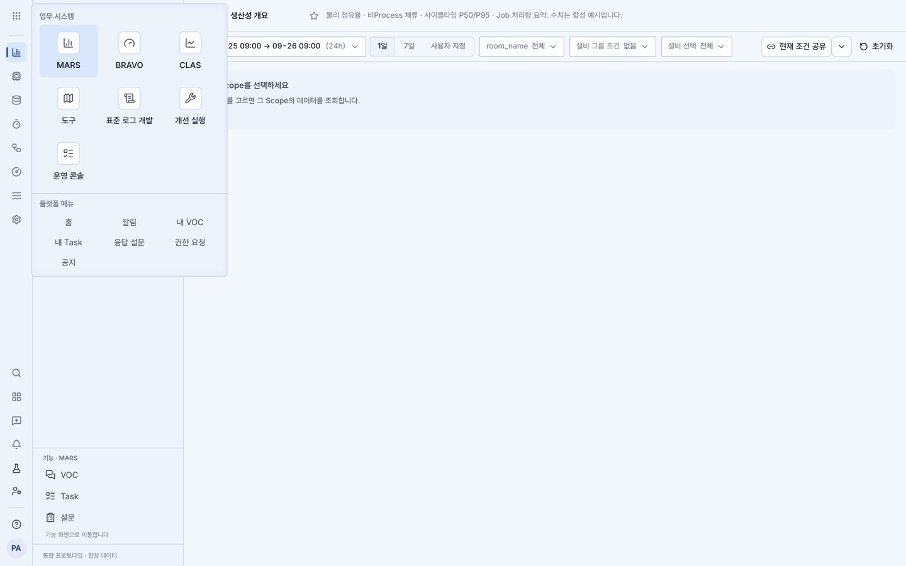
전환기
C 이름 보이는 트리거 계약 변경 필요
사이드바 머리 전체가 전환 버튼(M MARS / 생산성 분석 ⇅), 레일 맨 위는 홈 링크.
홈은 그룹 = 열(4열), 행은 이름 / 짧은 문구 두 줄.
레이아웃 계약 §3.2("머리를 또 다른 전환기로 만들지 않는다")와 ADR-0042를 바꿔야 합니다. 구현 약 10파일 + ADR.
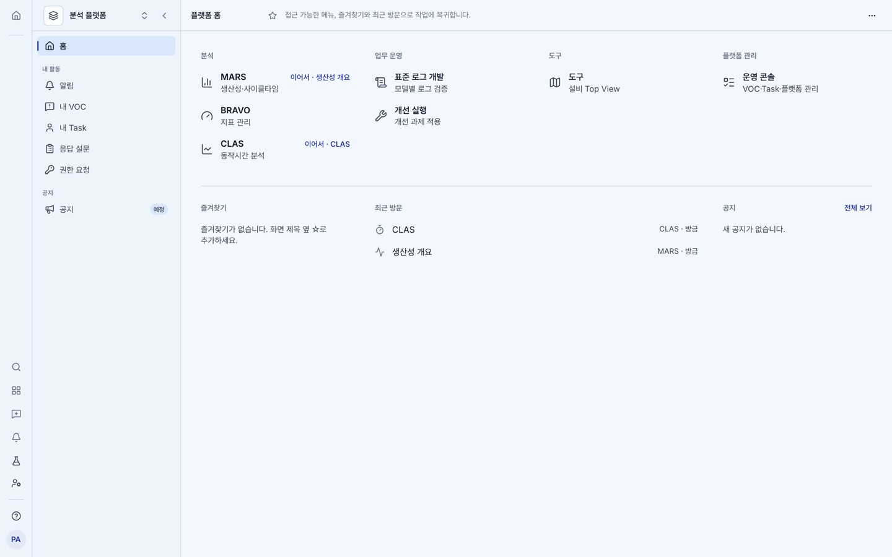
홈
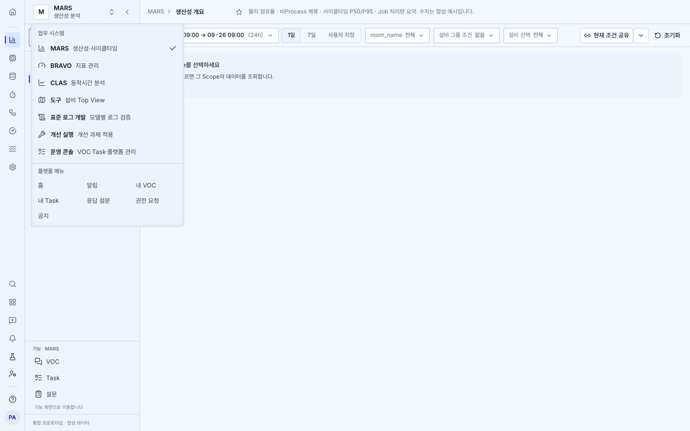
전환기
닫힌 트리거만 확대
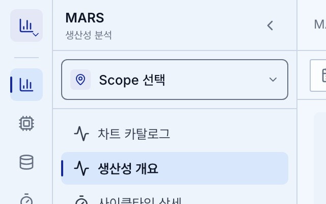
지금
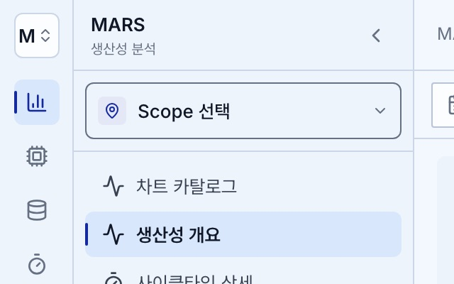
A
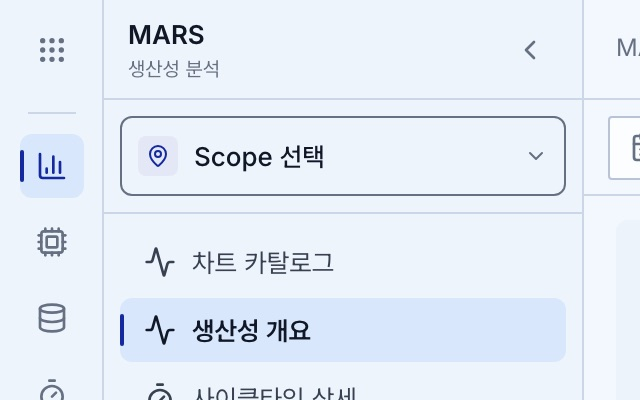
B
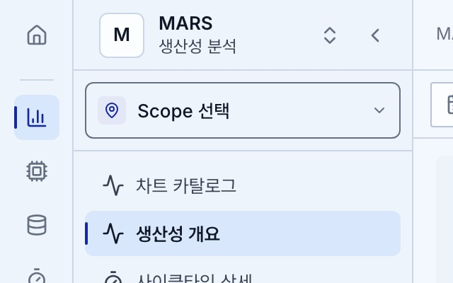
C
짧은 문구(시안 전용): MARS 생산성·사이클타임 · BRAVO 지표 관리 · CLAS 동작시간 분석 · 도구 설비 Top View · 표준 로그 개발 모델별 로그 검증 · 개선 실행 개선 과제 적용 · 운영 콘솔 VOC·Task·플랫폼 관리. MARS와 CLAS가 둘 다 「생산성 분석」이던 것을 구별되게 바꿨습니다.